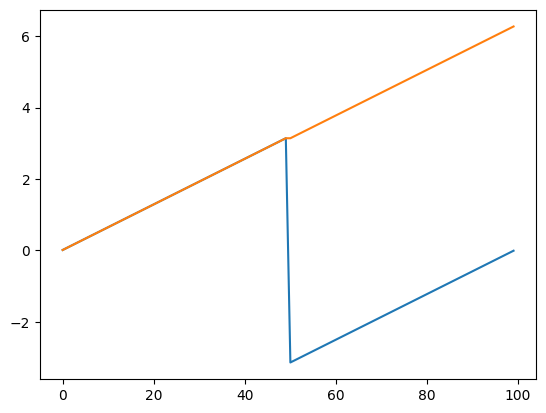
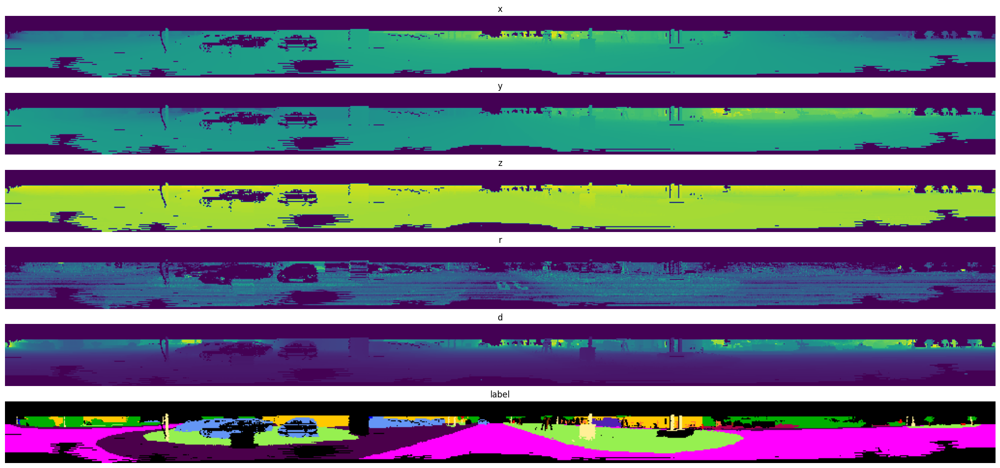
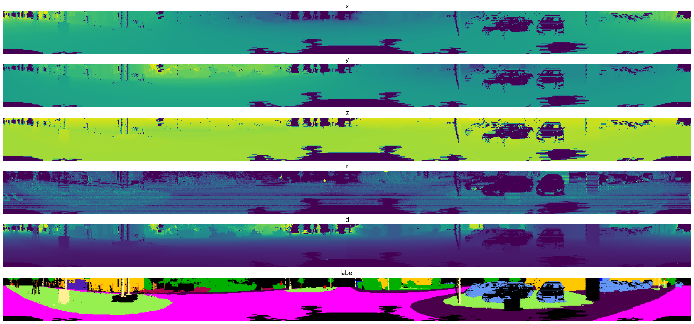
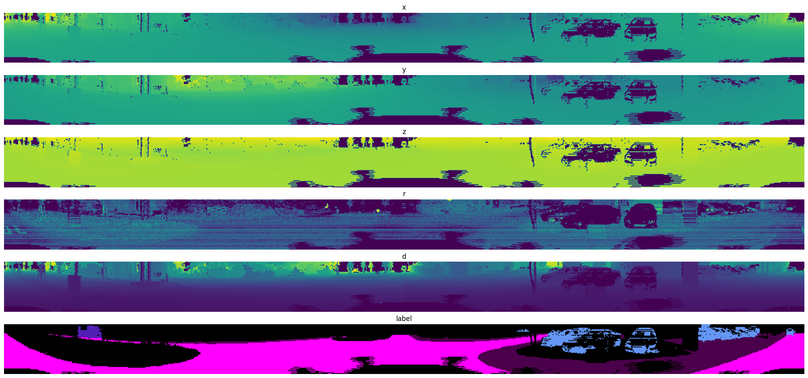
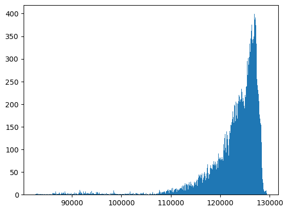
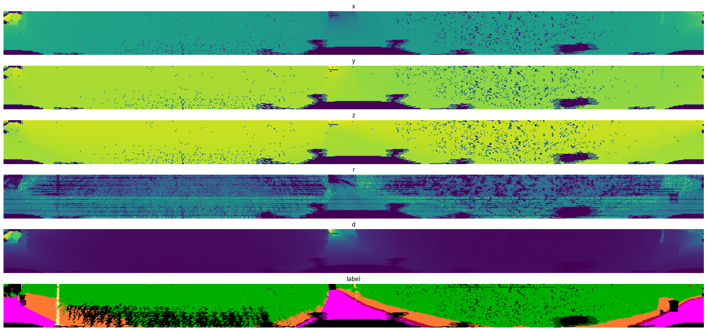

data_path = '/workspace/data'
ds = SemanticKITTIDataset(data_path)
frame, label, mask = ds[128]
len(ds)23201This is an adaptation of the code from the semantic-kitti-api as a pytorch Dataset.
SemanticKITTIDataset (data_path, is_train=True, transform=None)
Load the SemanticKITTI data in a pytorch Dataset object.
To use it, first download and extract the data_odometry_velodyne and data_odometry_labels folders from the provided links on their website into a folder called data, at the root of your workspace. Then, download the yaml file with the metadata from the semantic-kitti-api to the same folder. Lastly, use the following code to get the training data in its original format:
data_path = '/workspace/data'
ds = SemanticKITTIDataset(data_path)
frame, label, mask = ds[128]
len(ds)23201Without any transform set, the data is simply read into numpy arrays and mask is set to None.
frame, frame.shape(array([[68.421135 , 0.7897667, 2.5229597, 0. ],
[68.50563 , 1.0067025, 2.5259488, 0. ],
[68.56113 , 1.2226388, 2.5279377, 0. ],
...,
[ 3.8224514, -1.4165174, -1.7585769, 0.34 ],
[ 3.8349648, -1.4085199, -1.7635802, 0.33 ],
[ 3.8374305, -1.395524 , -1.7625839, 0. ]], dtype=float32),
(120210, 4))label, label.shape, label.dtype, set(label)(array([0, 0, 0, ..., 9, 9, 9]),
(120210,),
dtype('int64'),
{0, 1, 4, 5, 9, 11, 12, 13, 14, 15, 16, 17, 18, 19})mask == NoneTrueOne of the most efficient and performant ways to process Lidar point clouds is with the idea of range images introduced by the paper Range-Image: Incorporating sensor topology for LiDAR point cloud processing From the best of our knowledge there are two ways to compute such images in the literature:
Sperical/cylindrical projections (some papers that use this method: SqueezeSeg: Convolutional Neural Nets with Recurrent CRF for Real-Time Road-Object Segmentation from 3D LiDAR Point Cloud, RIU-Net: Embarrassingly simple semantic segmentation of 3D LiDAR point cloud, etc.)
Scan Unfolding projection (some papers that use this method: Scan-based Semantic Segmentation of LiDAR Point Clouds: An Experimental Study, EfficientLPS: Efficient LiDAR Panoptic Segmentation)
SphericalProjection (fov_up_deg, fov_down_deg, W, H)
Calculate yaw and pitch angles for each point and quantize these angles into image grid.
The following images from the Medium article Spherical Projection for Point Clouds illustrate the process in the spherical projection calculation:


UnfoldingProjection (W, H, eps=1e-05)
Assume the points are sorted in increasing yaw order and line number.
If the points are sorted in increasing yaw order and line number (which is the case in the SemanticKITTI dataset), then the projection lines can be found by making sure that discontinuities in yaw sequences come from scan completing cycles. That way, we can find these discontinuities and then quantize the yaw angles in the projection lines so they can be assigned to each pixel in the image grid.
To make sure the discontinuites happen from one scan line to another, we take into consideration that the vehicle used in the SemanticKITTI dataset has the following sensor configuration:

We also know that the Lidar sensor rotates its lasers in a counter-clockwise direction and that a lidar frame starts and finishes when the lasers cross the x axis. Therefore, we calculate the yaw angles with the np.arctan2 function and then add \(2\pi\) to the ones that are negative. The plot below, shows this trick on toy example data:
from matplotlib import pyplot as pltfake_yaw_raw_data = np.concatenate((np.linspace(0.01,np.pi), np.linspace(-np.pi, -0.01)))
fake_data_x = np.cos(fake_yaw_raw_data)
fake_data_y = np.sin(fake_yaw_raw_data)
plt.scatter(fake_data_y, fake_data_x);
fake_yaw = np.arctan2(fake_data_y, fake_data_x)
fake_yaw_corrected = np.arctan2(fake_data_y, fake_data_x)
fake_yaw_corrected[fake_yaw_corrected < 0] += 2.*np.pi
plt.plot(fake_yaw)
plt.plot(fake_yaw_corrected);
From this trick, we can simply detect the end of each projection line by checking when the diference between adjacent angles is smaller than some threshold. After some experimentation with different samples, a threshold of \(-\pi\) seems to robust even if there are some missing readings from the lidar.
two_lines = np.concatenate((fake_yaw_corrected, fake_yaw_corrected))
jump = two_lines[1:] - two_lines[:-1] < -np.pi
plt.plot(jump);
ProjectionTransform (projection)
Pytorch transform that turns a point cloud frame and its respective label into images in given projection style.
With one of the projection algorithms described previously, we can construct a ProjectionTransform object that can be used with the SemanticKITTIDataset. Here is an example on how to use it:
proj = SphericalProjection(fov_up_deg=12., fov_down_deg=-26., W=1024, H=64)
tfms = ProjectionTransform(proj)
ds.set_transform(tfms)
frame_img, label_img, mask_img = ds[128]As we can see below, the data is still returned as numpy arrays, but their shapes have changed as follows:
There are a lot of pixels in these projection images that have no corresponding lidar readings to be projected. Hence, these pixels were filled with:
The mask image provides a convenient boolean mask to easily identify pixels with valid lidar readings marked as ‘True’ and pixels with no lidar readings marked as ‘False’.
frame_img[:2], frame_img.shape, frame_img.dtype(array([[[0., 0., 0., 0., 0.],
[0., 0., 0., 0., 0.],
[0., 0., 0., 0., 0.],
...,
[0., 0., 0., 0., 0.],
[0., 0., 0., 0., 0.],
[0., 0., 0., 0., 0.]],
[[0., 0., 0., 0., 0.],
[0., 0., 0., 0., 0.],
[0., 0., 0., 0., 0.],
...,
[0., 0., 0., 0., 0.],
[0., 0., 0., 0., 0.],
[0., 0., 0., 0., 0.]]]),
(64, 1024, 5),
dtype('float64'))label_img[:2], label_img.shape, label_img.dtype, set(label_img.flatten())(array([[-1, -1, -1, ..., -1, -1, -1],
[-1, -1, -1, ..., -1, -1, -1]]),
(64, 1024),
dtype('int64'),
{-1, 0, 1, 4, 5, 9, 11, 12, 13, 14, 15, 16, 17, 18, 19})mask_img[:2], mask_img.shape, mask_img.dtype(array([[False, False, False, ..., False, False, False],
[False, False, False, ..., False, False, False]]),
(64, 1024),
dtype('bool'))ProjectionVizTransform (color_map_rgb_np, learning_map_inv_np)
Pytorch transform to preprocess projection images for proper visualization.
In order to plot comparable visualizations of the projections, we need to standardize the scale of the float channels from the frame projection and map the label integers to their corresponding RGB color defined in the color_map dict from the yaml file that was downloaded before. After some experimentation with several samples from the entire dataset, the hardcoded scale values in the ProjectionVizTransform.forward method seemed to work reasonably well.
Here is an example on how to use and compose the previous transforms with the torchvision.transforms.v2 module, and then visualize the resulting images with the matplolib.pyplot module:
def plot_projections(img, label):
fig, axs = plt.subplots(6, 1, figsize=(20,10), layout='compressed')
for i, (ax, title) in enumerate(zip(axs, ['x', 'y', 'z', 'r', 'd', 'label'])):
if i < 5:
ax.imshow(img[:,:,i])
else:
ax.imshow(label)
ax.set_title(title)
ax.axis('off')proj = SphericalProjection(fov_up_deg=12., fov_down_deg=-26., W=1024, H=64)
tfms = v2.Compose([
ProjectionTransform(proj),
ProjectionVizTransform(ds.color_map_rgb_np, ds.learning_map_inv_np),
])
ds.set_transform(tfms)
img, label, _ = ds[128]
plot_projections(img, label)
proj = UnfoldingProjection(W=1024, H=64)
tfms = v2.Compose([
ProjectionTransform(proj),
ProjectionVizTransform(ds.color_map_rgb_np, ds.learning_map_inv_np),
])
ds.set_transform(tfms)
img, label, _ = ds[128]
plot_projections(img, label)
In the next cell, we can see how long it takes on average to sample an item from this dataset class.
15.6 ms ± 345 µs per loop (mean ± std. dev. of 7 runs, 100 loops each)ProjectionToTensorTransform (*args, **kwargs)
Pytorch transform that converts the projections from np.array to torch.tensor. It also changes the frame image format from (H, W, C) to (C, H, W).
In order to use the dataset to train pytorch models, it is necessary to transform the data from numpy arrays to torch tensors. Also, for the frame images, it is necessary to transpose (or permute in torch lingo) its axis from channels last (H, W, C) to channels first (C, H, W).
Here is an example on how to use it with the scan unfolding projection:
proj = UnfoldingProjection(W=1024, H=64)
tfms = v2.Compose([
ProjectionTransform(proj),
ProjectionToTensorTransform(),
])
ds.set_transform(tfms)
img, label, mask = ds[0]
print(img.shape, img.type())
print(label.shape, label.type())
print(mask.shape, mask.type())torch.Size([5, 64, 1024]) torch.FloatTensor
torch.Size([64, 1024]) torch.LongTensor
torch.Size([64, 1024]) torch.BoolTensorHere is an example on how to combine the classes above to implement a torch.utils.data.Dataloader that iterates on batches of frame images, labels and masks:
from torch.utils.data import DataLoaderbs = 10
dl = DataLoader(ds, bs)
for batch in dl:
img, label, mask = batch
print(f"Shape of img \t [N, C, H, W]: \t {img.shape}")
print(f"Shape of label \t [N, H, W]: \t {label.shape}")
print(f"Shape of mask \t [N, H, W]: \t {mask.shape}")
breakShape of img [N, C, H, W]: torch.Size([10, 5, 64, 1024])
Shape of label [N, H, W]: torch.Size([10, 64, 1024])
Shape of mask [N, H, W]: torch.Size([10, 64, 1024])The paper MVLidarNet: Real-Time Multi-Class Scene Understanding for Autonomous Driving Using Multiple Views proposes a different mapping of the labels for training than the one proposed by the yaml in the semantic-kitti-api. They only use the following 7 classes:
From the original yaml file, we can use the following remapping rules dictionary and the method learning.remap from the dataset to apply the remapping:
remapping_rules = {
1: 1,
4: 2,
6: 3,
7: 4,
2: 4,
9: 5,
11: 6
}
ds.learning_remap(remapping_rules)
tfms = v2.Compose([
ProjectionTransform(proj),
ProjectionVizTransform(ds.color_map_rgb_np, ds.learning_map_inv_np),
])
ds.set_transform(tfms)
img, label, _ = ds[128]
plot_projections(img, label)
ds = SemanticKITTIDataset(data_path)
f_lens = []
for f, l, m in ds:
f_lens += [len(f)]
f_lens = np.array(f_lens)plt.hist(f_lens, 500);
idxs = np.arange(len(ds))
idx = idxs[f_lens > 129300][0]
print(idx)
proj = UnfoldingProjection(W=1024, H=64)
tfms = v2.Compose([
ProjectionTransform(proj),
ProjectionVizTransform(ds.color_map_rgb_np, ds.learning_map_inv_np),
])
ds.set_transform(tfms)
img, label, _ = ds[idx]
plot_projections(img, label)22461
When benchmarking different semantic segmentation algorithms, the following LightningDataModule should be used.
SemanticSegmentationLDM (proj_style='unfold', proj_kargs={'W': 512, 'H': 64}, remapping_rules=None, train_batch_size=8, eval_batch_size=16, num_workers=8)
Lightning DataModule to facilitate reproducibility of experiments.